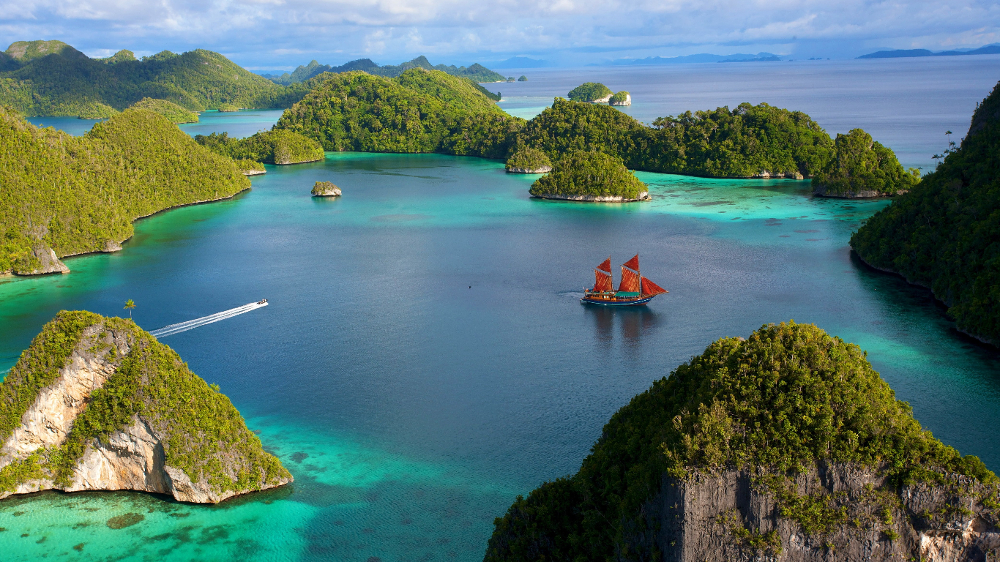

Danau Toba
Danau Toba adalah sebuah danau tekto-vulkanik dengan ukuran panjang 100 kilometer dan lebar 30 kilometer yang terletak di Provinsi Sumatera Utara, Indonesia. Danau ini merupakan danau terbesar di Indonesia dan Asia Tenggara.
- 
-
-
Sejarah Danau Toba
Supervolcano puluhan ribu tahun silam
Danau Toba merupakan kaldera yang terbentuk karena erupsi besar gunung berapi di kawasan tersebut. Kaldera merupakan sebuah kawah vulkanik yang terbentuk akibat adanya proses erupsi yang sangat besar. Pembentukan kaldera ini biasanya disertai runtuhnya batuan penyangga ke dalam dapur magma di dalam gunung. Supervolcano yang meledak pada zaman dahulu tersebut kini dalam istirahat atau temasuk dalam golongan gunung berapi Tipe B. Mengutip "Seri Negeri Cincin Api: Toba Mengubah Dunia", yang disusun Litbang Kompas pada 2019, letusan Supervolcano Toba terjadi sekitar 74.000 tahun yang lalu. Letusan dahsyat itu menciptakan kaldera besar yang seiring waktu terisi air dan kini dikenal sebagai Danau Toba.Spot wisata di Danau Toba
Berikut adalah daftar spot wisata yang berada di sekitar Danau Toba;
- 1. Kebun Bunga Sapo Juma Tongging
- 2. Lembah Bakkara
- 3. Puncak Sidiangkat
- 4. Khas Parapat
- 5. Kapal Pesiar Danau Toba
- 6. Air Terjun Situmurun
- 7. Air Terjun Binanga Bolon
- 8. Air Terjun Naga
- 9. Pusuk Buhit
Danau Toba adalah tempat diselenggarakannya *Tradisi Mangebang Bolon.
*Tradisi mengelilingi Danau Toba Menggunakan perahu besar
Itulah artikel terkait dengan dengan Danau Toba yang kami sajikan, gimana sobat apakah artikel ini membantu menambah wawasan kalian mengenai Danau Toba, kalau iya jangan lupa bagikan postingan ini kepada teman kalian, terima kasih.